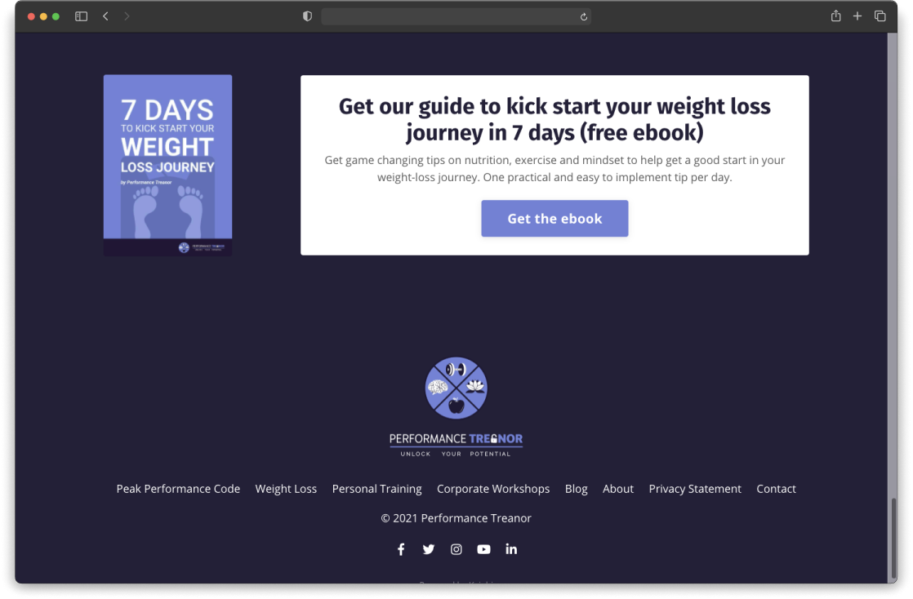
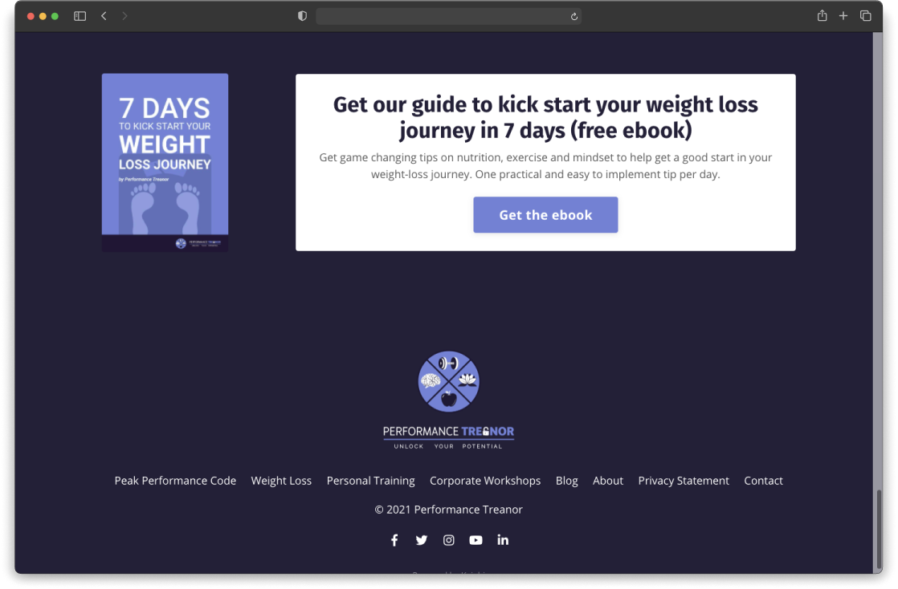
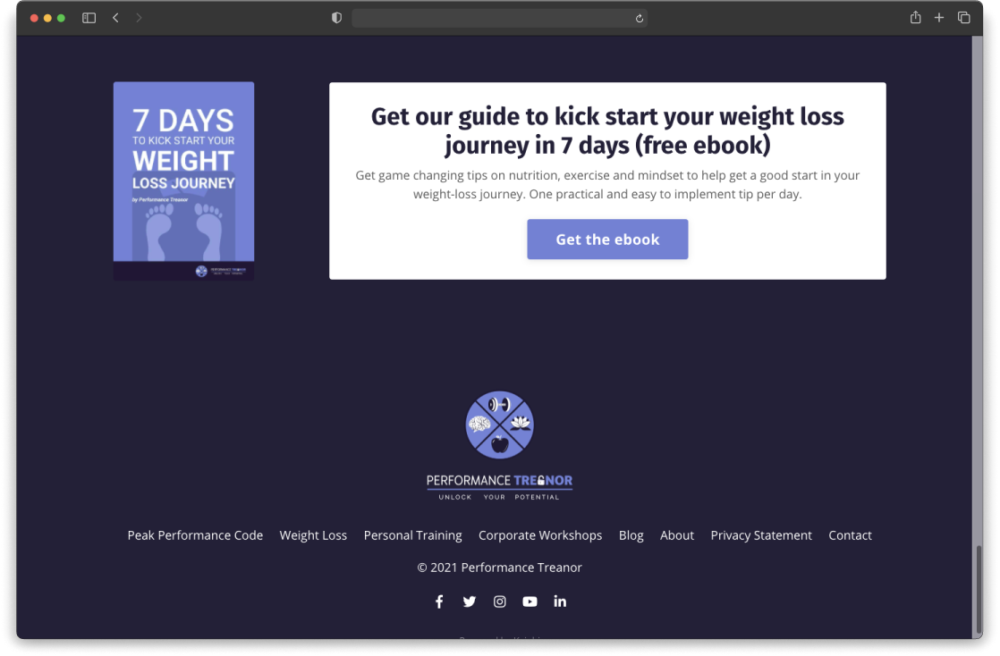

All projects
Performance Treanor is a health and wellness coach and presenter. In early 2020, he embarked on a new business journey adding new services to his offering: corporate workshops and a peak performance online course, on top of personal training and weight loss programmes.

My primary focus was to help launch the online course and redesign the existing website. I also brought in growth advice and my experience as a communications professional.
I implemented a new website reflecting the new offering. The client chose Kajabi as it enables him now to be fully autonomous in updating the website and the online course, and sending email marketing campaigns.
I changed the overall branding, designed new visuals for the website and created diverse communication material (images for social media, video teasers, new layout for the monthly newsletter, pitch presentations for B2B clients).
I helped the founder launch a peak performance online course: video shooting and editing on Premiere Pro (200+ videos produced) & web implementation.
The first phase of our work together was to do a competition and market analysis. I did a benchmark of existing websites to identify best practices and based on a script I wrote, we conducted interviews on a panel of users who had already experienced health and wellness services. The interviews allowed us to identity people’s goals, behaviours and mental models about personal development courses. The conclusions were very insightful:
According to those results, we decided to offer free ebooks with plenty of advice as a way to discover the service and the trainer and offer a satisfaction guarantee for the course, highlight testimonials on the website, provide the first chapter of the online course as a second, less expensive, less time-consuming product.
We first agreed on a website architecture and I sketched mockups for the website design and provided guidelines for the client to write the website content. I proofread and put together the free e-books on Figma. In parallel, we spent 3 days shooting all the online course videos which I edited (200+ videos in total) with an intro and outro, transition screens and visual clues for more interaction.
After reviewing 6-8 online course platforms, the client chose to subscribe to Kajabi. I then implemented the website pages and structure according to the mockups, helped write part of the content and designed all the needed visuals on Figma. I made sure the online course platform was consistent with the rest of the website and overall branding.
The website and online course were launched in early October 2020. While it is still early to draw conclusions on the online course results, the number of opt-ins has improved since the previous website and the average opening rate of the monthly newsletter proves to be quite high (35%). The improved branding helps convert more B2B clients every month.
As my first project in a consultant role, the most important lessons I took away from it were how to communicate and collaborate with a client and how to manage a project with different levels. Having a shared understanding of the goals and deliverables is a must to avoid any misunderstandings. For that, as the project went on, I learned to clearly detail the scope, nature and timeline of the deliverables.